Proyecto 04 · KTM · Desarrollo de accesorioProject 04 · KTM · Accessory development
Defensa 390 Adventure390 Adventure crash bar
Sistema de defensa para la KTM 390 Adventure, parte de una plataforma de accesorios pensada para proteger, integrarse a la moto y fabricarse bien. Combina estudios de packaging sobre escaneo 3D, refinamiento iterativo de la geometría y decisiones guiadas por el curvado de tubo y la soldadura.
Crash bar system for the KTM 390 Adventure, part of an accessory platform built around protection, integration and manufacturability. It combines 3D-scan packaging studies, iterative geometry refinement and decisions driven by tube bending and welding.
Sobre el escaneo 3DBuilt on a 3D scan
El recorrido de los tubos sale de la arquitectura del chasis, para que la defensa se integre a la moto con continuidad visual y estructural. Los estudios de packaging sobre el escaneo validaron los despejes con carenados y motor sin afectar la ergonomía del piloto.
Tube routing follows the frame's architecture so the crash bar blends into the bike with visual and structural continuity. Packaging studies on the scan validated clearances around fairings and engine without compromising rider ergonomics.
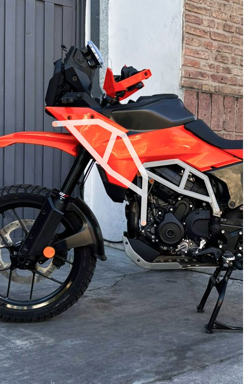
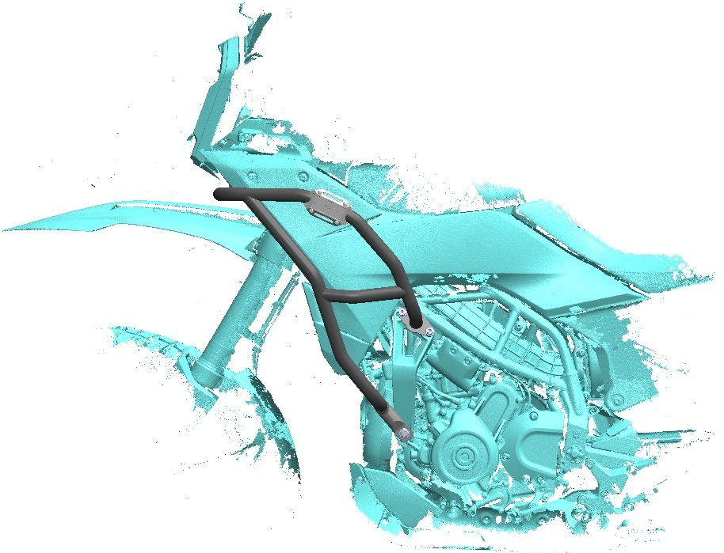
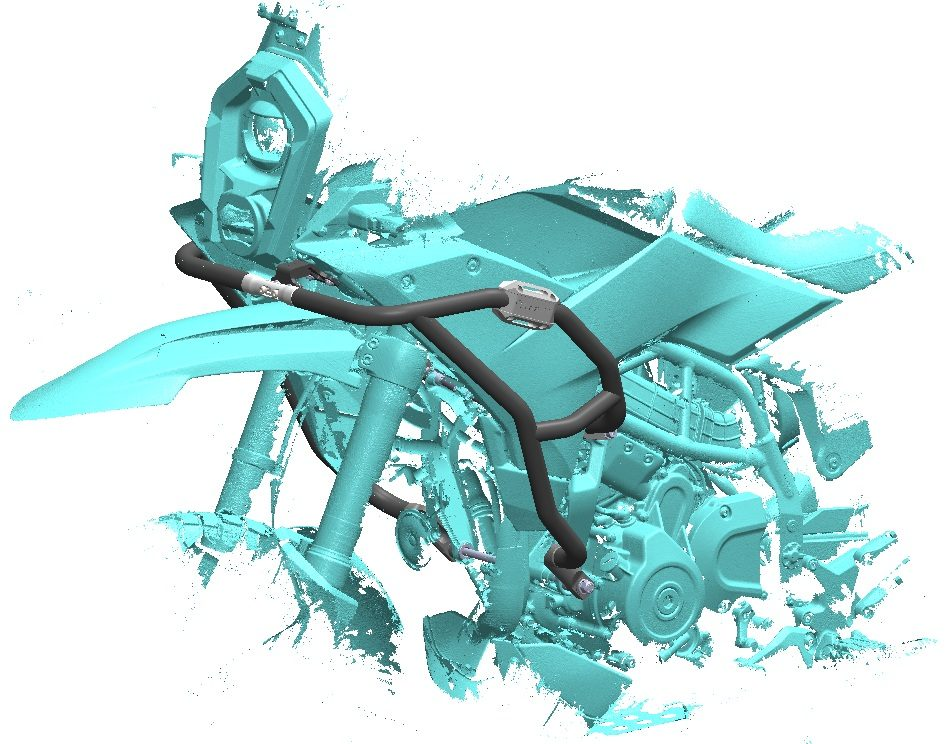
Anclajes que reparten la cargaMounts that spread the load
Los puntos de anclaje laterales triangulan la base estructural del conjunto para darle rigidez y repartir los impactos. La interfaz central une los dos lados y hace que el sistema trabaje como una sola estructura.
The lateral mounting points triangulate the structural base for rigidity and even load distribution. The central interface joins both sides so the system behaves as a single structure.
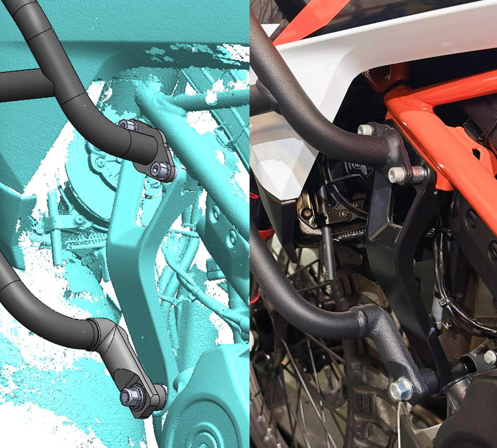
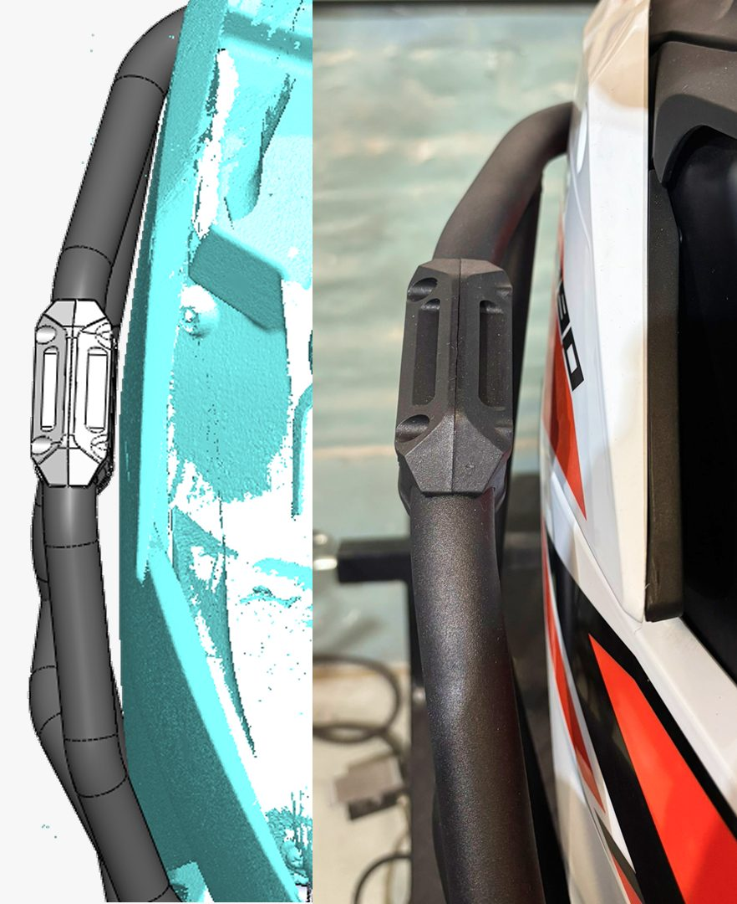
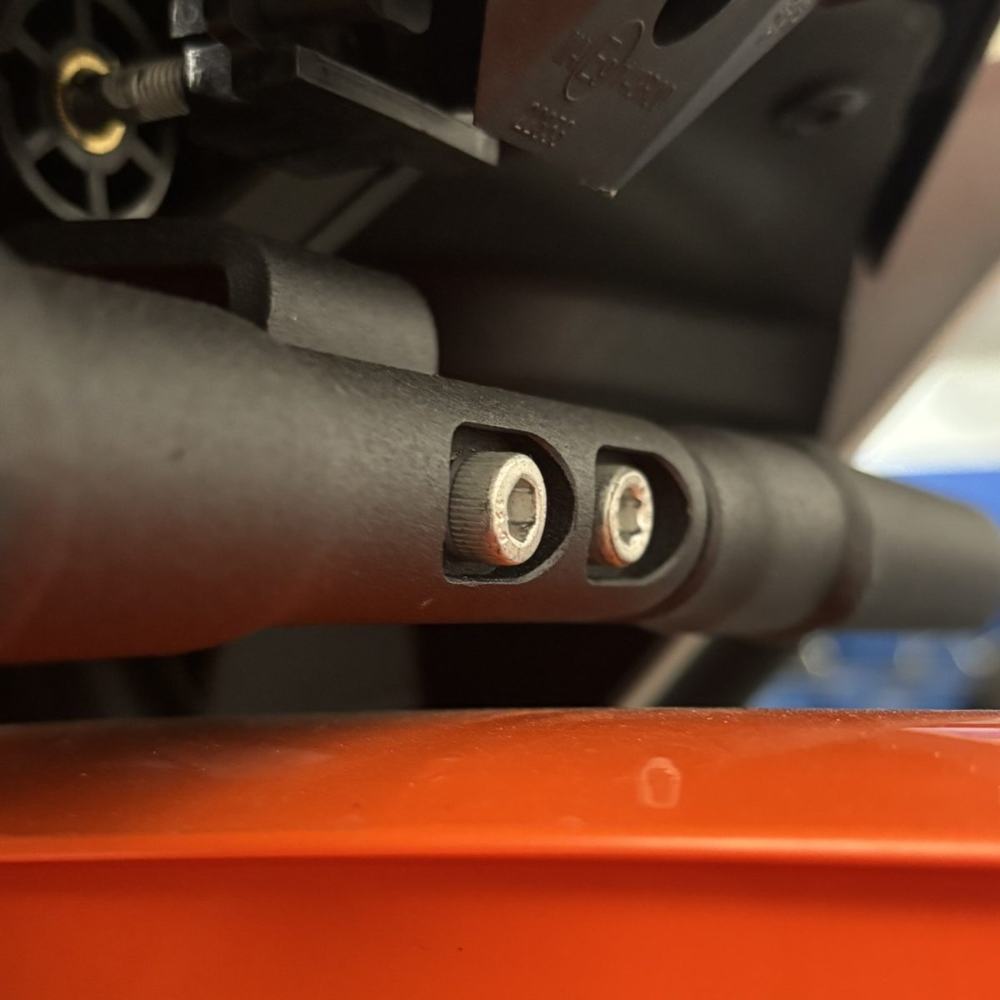
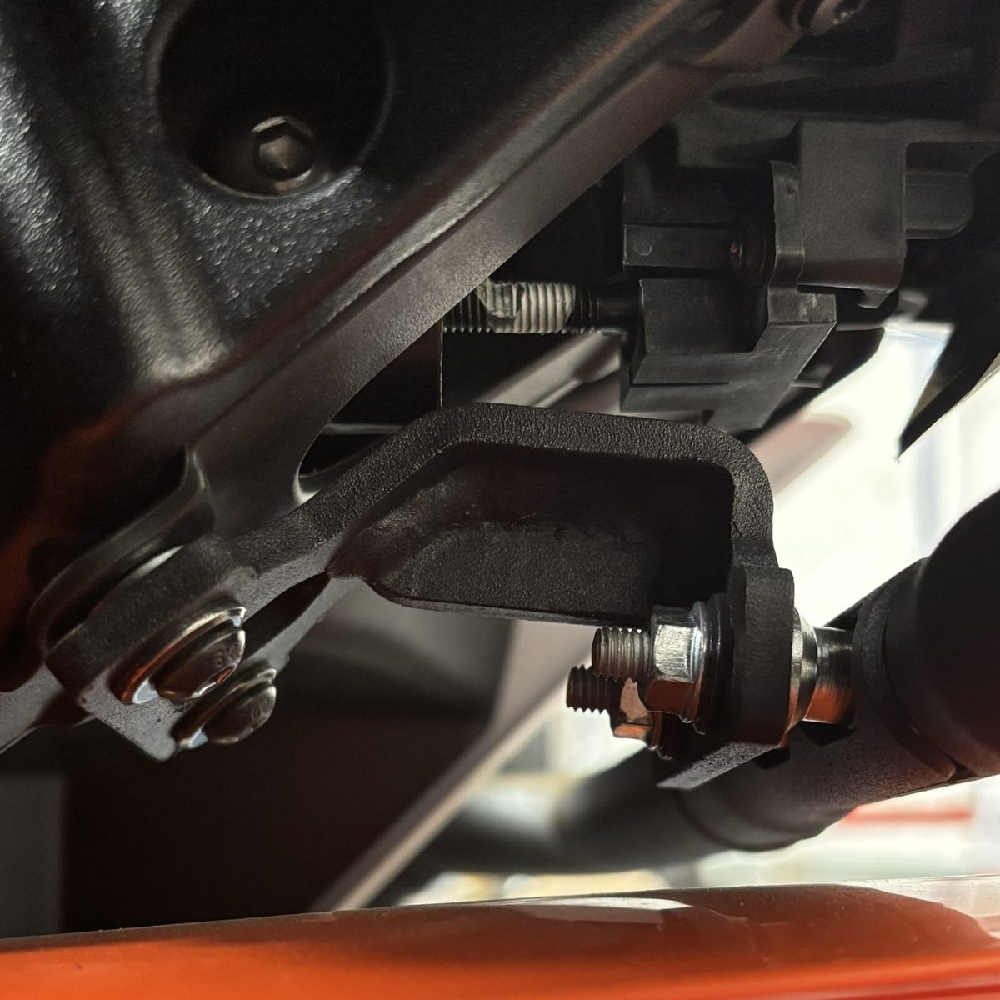
Validada en R y XValidated on R and X
Los prototipos físicos se probaron en las dos versiones de la 390 Adventure para verificar calce, recorrido de los tubos y alineación de las interfaces, confirmando que la geometría digital coincidía con la de producción.
Physical prototypes were tested on both 390 Adventure versions to check fitment, tube routing and interface alignment, confirming the digital geometry matched production.
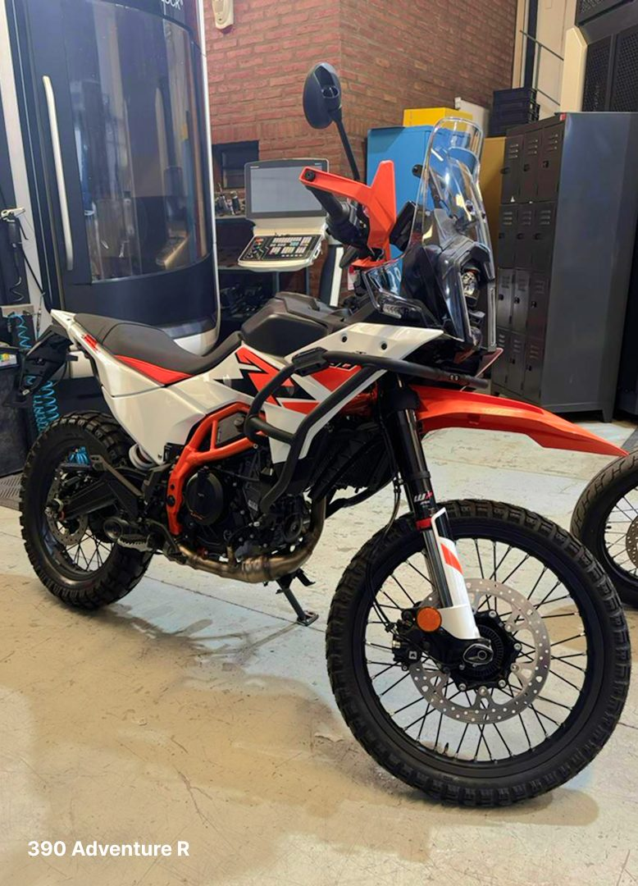
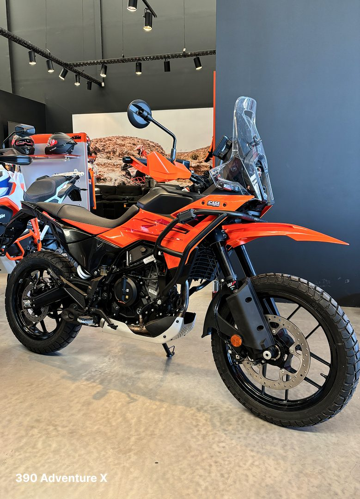
Integración finalFinal integration
El producto terminado se integra a la moto manteniendo la rigidez estructural y la coherencia visual con el diseño original, sin sacrificar estabilidad ni estética en ninguna de las dos variantes.
The finished product integrates with the bike, keeping structural rigidity and visual coherence with the original design, without trading stability or looks on either variant.
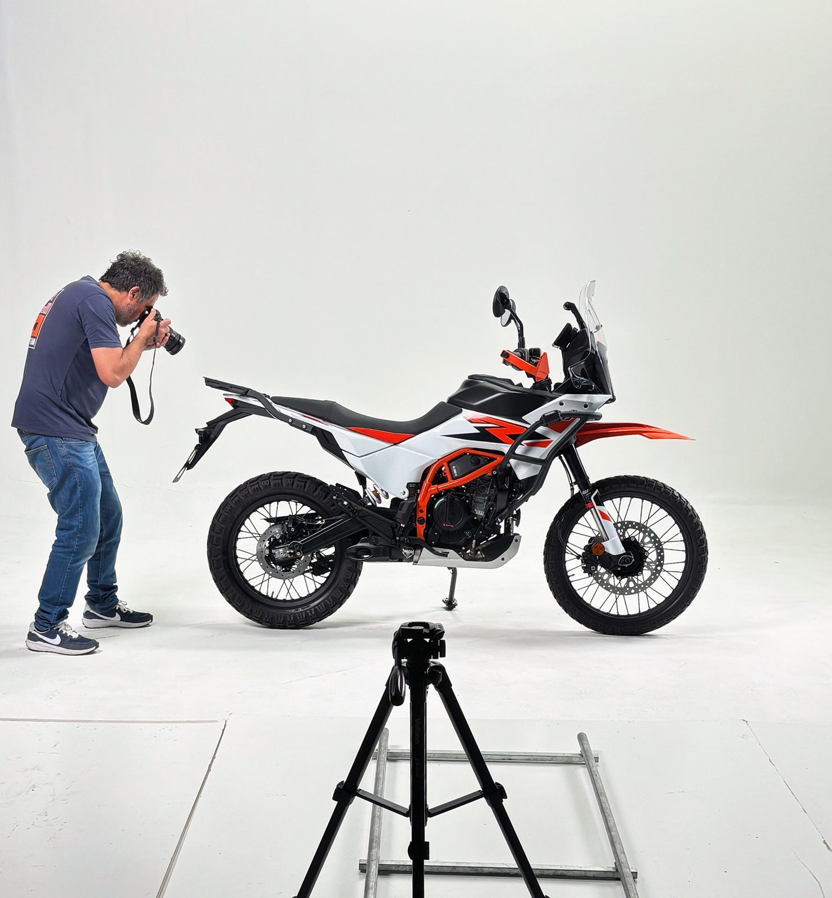
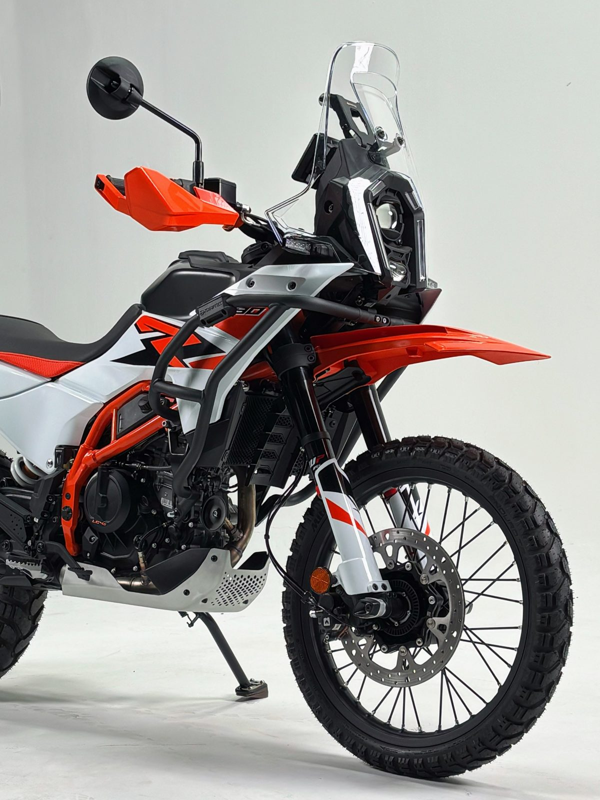